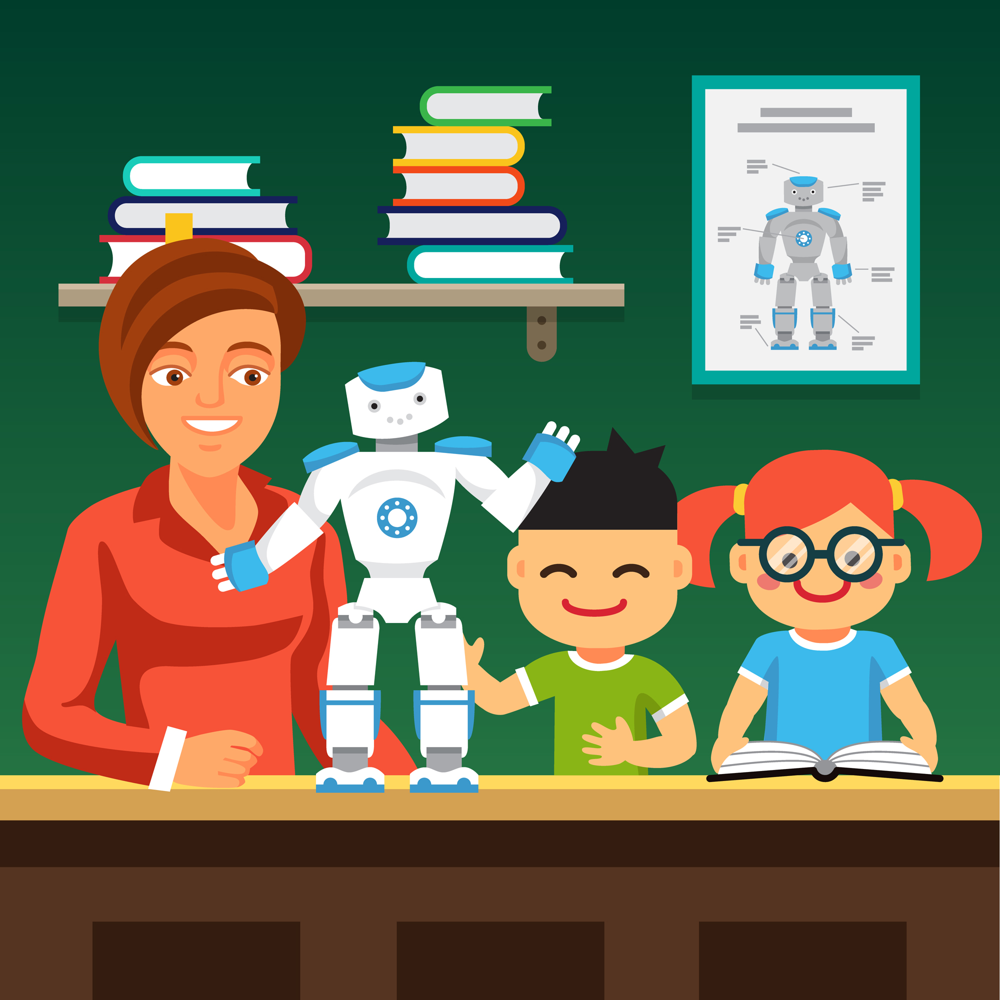

Bridging Individual and Collaborative Learning: Lessons from VocabTrainerA1
Individual learning offers learning at your own pace, less pressure, and ability to go as much deep as you want. However, it lacks in one crucial aspect that is required for language learning: real, physical communication with another speaker. Researchers Anke Berns et al. focused this problem in their research "Motivation, students' needs and learning outcomes: a hybrid game‑based app for enhanced language learning", and offered valuable solutions. By using an app they specifically created for this research, they were able to achieve both higher motivation levels and improved grades. Let's see what can we learn from this and the cause of their success!
In many language learning settings, it is not rare for learners go through one of the 2 approaches. First -if they are alone or face to face communication is not emphasized- an individualistic one, or second, a heavily interaction based one. While both of them are good at distinct things and have their own advantages or disadvantages, current literature promotes a hybrid learning style: Individualistic to make sure students can learn according to their strengths, and communicative for meaningful and more efficient learning. The research puts forward that the European Higher Education focuses too much on individual learning and understates the importance of face-to-face interaction. Therefore, they set out to solve this problem by creating "VocabTrainerA1".
What is VocabTrainerA1?
From the writers own words:
VocabTrainerA1 is a two-part hybrid game-based app. The first part (Levels 1–3) is focused on individual learning and offers a number of offline game tasks. The second part (Level 4) is an online collaborative murder mystery game, called Catch Me, If You Can!, in which students must work together to identify a serial killer.
As you can see, the app aims to incorporate both individualistic and collaborative learning. To give further detail, individualistic parts are placed at the beginning and consist of identifying, matching and describing fundamental word groups, such as places or body parts etc. These activities are restrictive by nature, so although they are not suitable for learning the words meaningfully, they are great at introducing them. It is also important to note that the app is heavily gamified through time restrictions and points, which are a great way to increase engagement. After students done learning the target words in simple ways, they reach the final, meaningful activity where they need to communicate with their friends using the words they learnt. This activity is an excellent way to conclude the learning, as it is both highly engaging and challenging.
Researchers conducted the study on a Spanish Univerisity, 104 German language learners for 4 weeks. Afterwards, researchers measured motivation, perceived usefulness, and also academic grades improvement. They found that the learners had great gains in vocabulary, and also performed better on the post test. Furthermore, learners noted that they had increased motivation and engagement, as well as the appreciation for feedback, competition, and collaboration.
What can we learn about this?
Word Count: 411